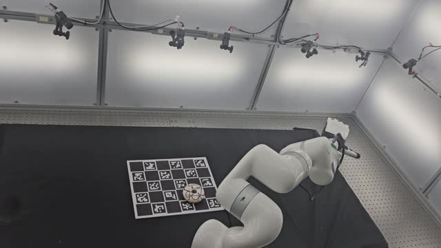
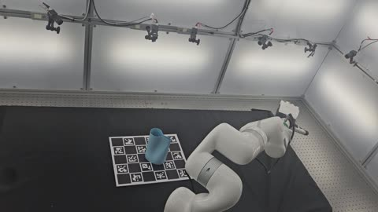
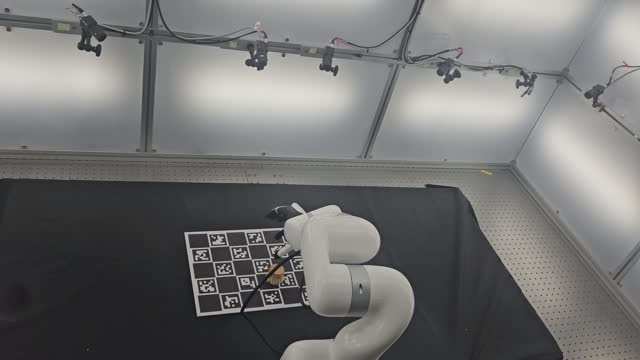
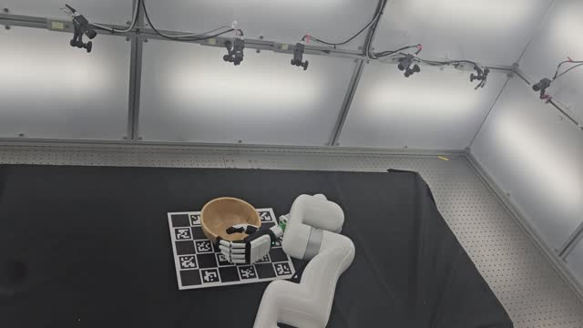
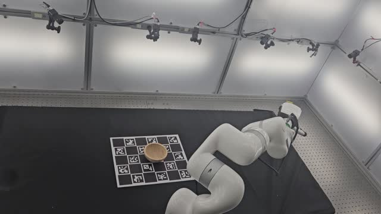
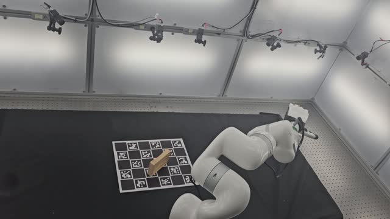

System
How AutoDex works
Given a candidate generator and a multi-fingered hand, AutoDex executes each candidate, observes its physical outcome, and resets the workspace — producing ground-truth labels with no teleoperator.

Collecting real-world-validated dexterous grasps — successes and failures — on a physical robot, with no human in the per-trial loop.
AutoDex runs unattended. Candidate grasps are generated in simulation, validated on a real multi-fingered hand under a 20-camera capture rig, and the workspace is reset autonomously between trials.
Dexterous grasping requires real-world data, yet existing collection paradigms force a choice between simulation (cheap but contact-unreliable) and human teleoperation (faithful but unscalable). We argue that the underlying obstacle is a structural property of the problem: sim-to-real transfer for grasping is asymmetric — geometric feasibility (IK solvability, collision avoidance, kinematic reachability) transfers reliably from simulation, while contact dynamics (friction, slip, multi-finger force closure) do not.
We present AutoDex, an automated real-world data-collection system that uses simulation to propose geometrically feasible grasps and physical execution with a multi-fingered hand to validate grasp stability. AutoDex closes the full loop without human intervention: it accepts candidates from a generator, localizes the object with dense 20-camera tracking, plans and executes collision-monitored motions, labels lift-and-hold success or failure, actively resets the object for the next trial, and logs each trajectory.
Using AutoDex, we collect 3,593 real-world-validated grasps across the Allegro and Inspire hands on 100 diverse objects, including both successful and failed trials. For a matched 500-trajectory collection, AutoDex requires 10.3 h versus 49.4 h for teleoperation — a 4.8× throughput improvement — and real-world validation raises grasp success from 34% under simulation-only validation to 76%.
Many dominant dexterous failure modes — finger-pad deformation, micro-slip, force closure across simultaneous contacts — are not parameters any simulator exposes. Validating candidates on real hardware fixes that.
Retrieval-execution success across four scene types. The gain holds across material, scene, and weight categories — and is largest in cluttered scenes, where validated grasps still reach 80–90% success.
Given a candidate generator and a multi-fingered hand, AutoDex executes each candidate, observes its physical outcome, and resets the workspace — producing ground-truth labels with no teleoperator.
Click each stage to see it run.
Candidate grasps are generated in simulation inside virtual-obstacle scenes, then pre-filtered under deliberately optimistic settings — keeping every geometrically feasible candidate while discarding the impossible ones cheaply.
Selection allocates the limited real-execution budget across the four scene types, prioritizing candidates that cover the most scene constraints before committing robot time.
Motion planning produces a collision-free trajectory; a dense 20-camera synchronized RGB rig tracks object and hand throughout each lift-and-hold trial, yielding a ground-truth success/failure label.
A hardware-aware sequential reset restores the workspace between trials — letting the system run fully unattended overnight and collect both successes and failures at scale.
Real-world-validated dexterous grasps — successes and failures — with synchronized multi-view observations and robot-state logs, captured by a 20-view RGB rig across four scene types.






@misc{choi2026autodex,
title = {AutoDex: An Automated Real-World System for Dexterous Grasping Data Collection},
author = {Choi, Mingi and Kim, Gunhee and Kim, Jisoo and Kim, Taeksoo and
Ha, Taeyun and Lim, Jongbin and Joo, Hanbyul},
year = {2026}
}